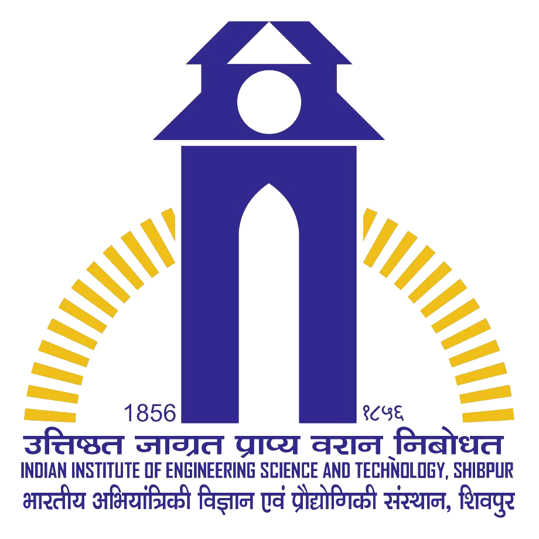
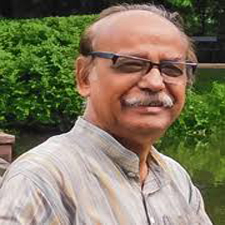
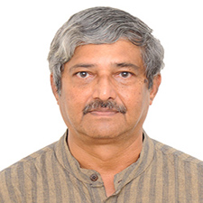
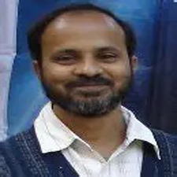
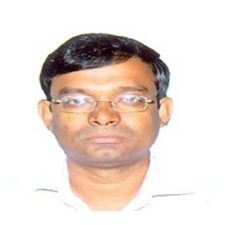
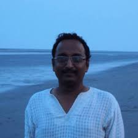

Department of IT, IIEST Shibpur
June 01–05, 2026
Organized by
Department of Information Technology
Indian Institute of Engineering Science and Technology, Shibpur
In this era of LLMs and machine learning where artificial intelligence has become a tool embedded in everything digital, is computer science becoming just an application to support all other domains? Or, indeed there are prospects to be explored, to unwind and learn which make computer SCIENCE, a "science" in its own right? We believe computer science has much more to offer, not merely being just a tool! To explore the unlimited promises and possibilities of computer science, let us cultivate the roots of computing.
With this objective, Department of Information Technology, IIEST, Shibpur is organising a 5-day Workshop on Logic and Automata (WoLA).
The deep connection between logic and automata is foundational to theoretical computer science, underpinning advances in various fronts of computer science including artificial intelligence. The workshop aims to bring together faculty members, researchers and graduate students working at the intersection of automata theory, formal logic, and their applications. It will focus on the foundational concepts of formal logic and automata theory, emphasising on cultivating the roots of computing. Particularly the workshop will have a major focus on cellular automata and their recent advances, including in-memory computing, a landmark development for high-performance computing.
This one-week workshop will not only serve the researchers and practitioners, but also create interests among the young minds to work on foundational aspects of computer science. It will also play as an advanced guide for the participants to explore the theory and applications of automata theory and logic and will open up more research options for them to continue.
The workshop is co-located with the learning phase of the Summer School on Cellular Automata 2026. This is the sixth edition of the summer school, a flagship event of Cellular Automata India. The aim of the summer school is to promote cellular automata research in India and outside India. You may visit the previous editions of the school (2021,2022,2023,2024 and 2025) to know the success stories of this series of event. All registered participants of the workshop are eligible to participate in this edition of the summer school.

Prof. Mihir K Chakraborty

Prof. R. Ramanujam

Prof. Biplab K Sikdar

Dr. Sukanta Das

Dr. Jayanta Sen
Who Can Apply?
Registration Fees:
Seats: Only 60 (First Come First Serve)
Deadline: 22-05-2026
*Limited number of scholarships for fee waving are available. Please contact the organizers to avail.
Download PosterThere are a few budget hotels around IIEST, Shibpur. The UG/PG students may apply for hostel accommodation in IIEST, Campus. For hostel accommodation, please contact the organizers.
Dr. Sukanta Das
Associate Professor, Department of IT, IIEST Shibpur
sukanta@it.iiests.ac.in
Dr. Kamalika Bhattacharjee
Assistant Professor, Department of IT, IIEST Shibpur
kamalika@it.iiests.ac.in